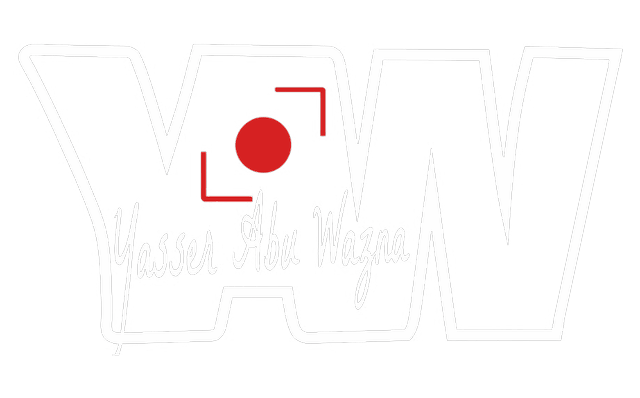
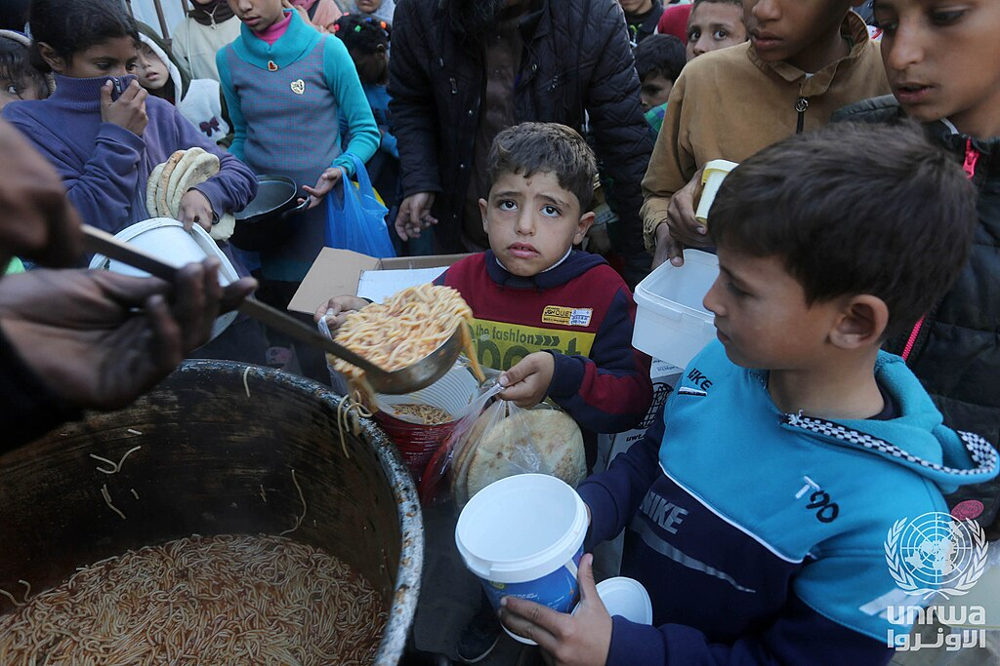
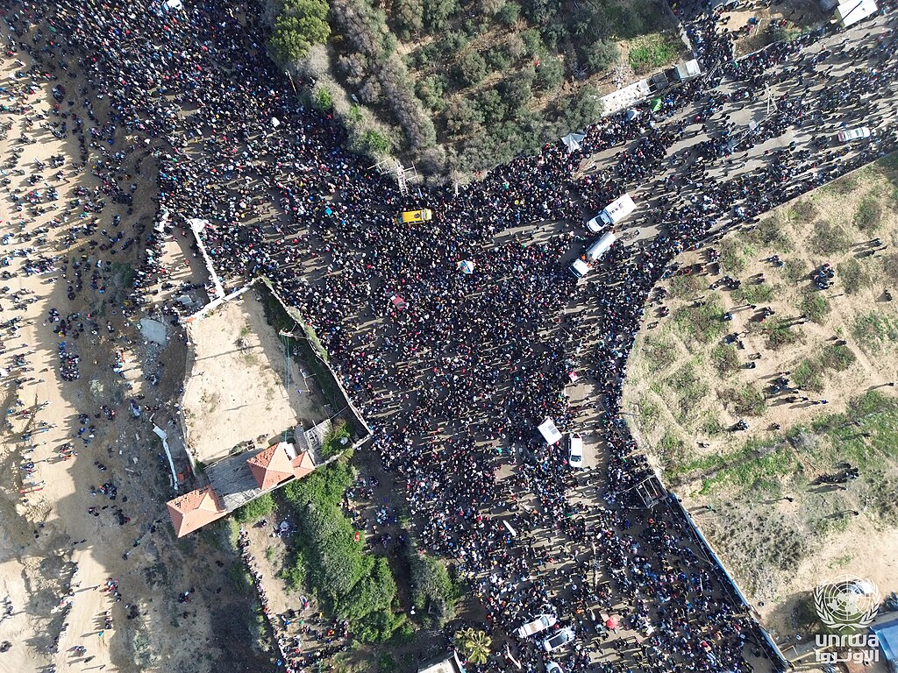
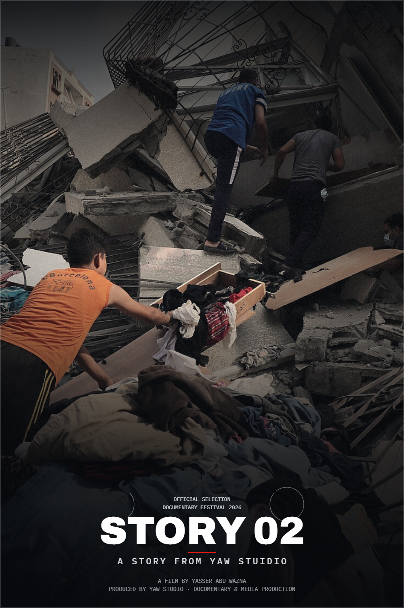

REEL 01
● Now showing
01

YAW STUDIO · GAZA
YAW STUDIO combines local field knowledge, international production standards and responsible visual storytelling for media, documentary and humanitarian partners.
Documentary films, visual journalism and field production shaped by long-term access, local knowledge and human-centred storytelling from Gaza.


Selected documentary photography from Gaza.
Fragments of place, survival and everyday life — photographed with attention to context, dignity and the details that often disappear behind headlines.
International-standard production support under complex field conditions.
YAW STUDIO works with media organisations, documentary teams, humanitarian organisations and production partners that need reliable field access, visual production and informed local support from Gaza.
Footage, photography and documentary material from Gaza available for professional licensing.
Explore selected YAW STUDIO visual material with public previews and basic rights information.
Not all YAW STUDIO material is publicly displayed. Sensitive, unpublished or restricted material may be shared only through direct professional request.
Reported pieces from Gaza — written and photographed on the ground.

Every morning the line forms at five. By six it has folded twice around the block, and by seven the argument about who was first has already been settled by whoever is oldest.
It is not a story about water. It is a story about the order people build when nothing else is ordered.

The room was a storage bay. It has running water, which the east wing no longer has, and so it became the place where limbs are made.
Forty-one children are on the list. Most have waited since the summer, when the casting material stopped at the crossing.
The warehouse has one window and no door. The teacher brings the door with her, a sheet of plywood she leans across the opening when the wind comes off the sea.
She has taught the same forty-two children for three years, in four different buildings.